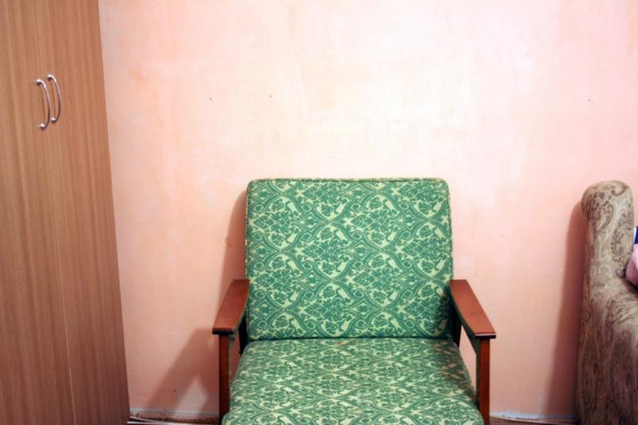
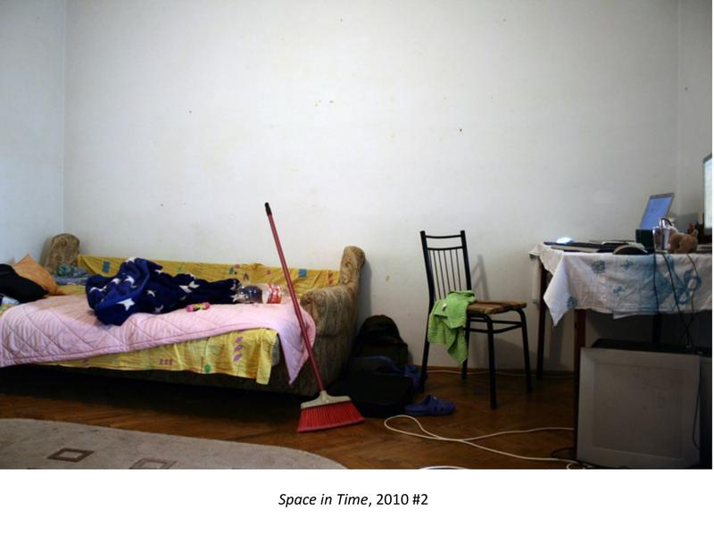
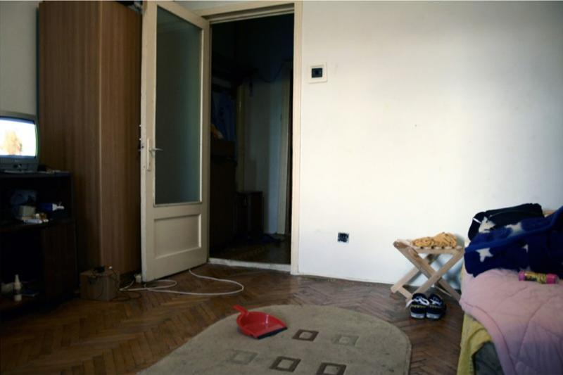
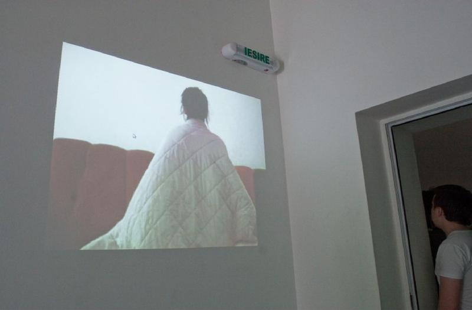
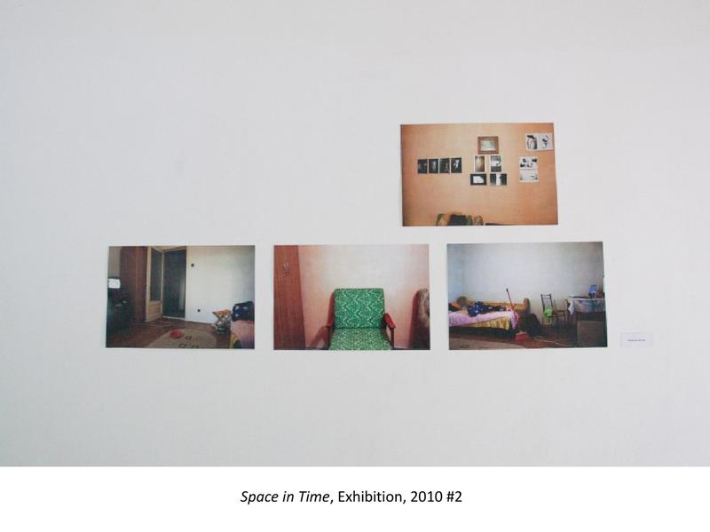
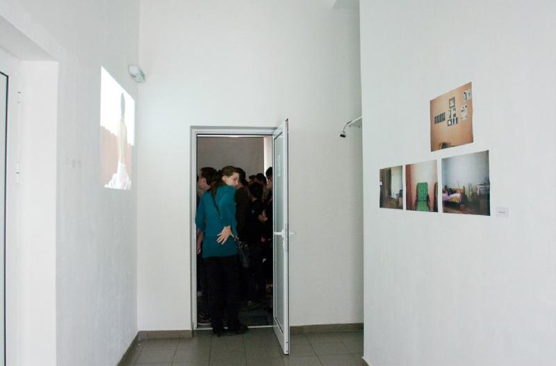

performance · video · installation · photography · programming · interactivity
Space in Time
My bachelor’s thesis project: an interactive installation about private space and the body. In a corner of a gallery, two curtains on a purpose-built frame closed off a small room, with a video projected on the front wall and photographs on the right wall. Visitors went in one at a time, and the video responded to their movement.
About the project
Private space is the main motif of the work, in its concept and in its place in the exhibition. The private hurts so deeply because it touches our essential wound, and it shows us our wild mortality.
I used my own body as the basis of the work, wanting to use photography to resist framing it in derogatory terms. The project tries to remove the comfortable distance between the audience and the work, through movement and long looking, while keeping a high level of uncertainty.
I wrote all the code for the installation myself. A webcam captured images of the room, and the application analysed and modified them to perceive movement there and make the video respond to it.
- Thesis titleSpațiu personal. Corpul în timp și spațiu
- DegreeBachelor’s thesis, June 2010, Photography, Video and Computer Image Processing, George Enescu National University of Arts, Iași
- SupervisorsMatei Bejenaru, Florin Grigoraș
- MediaPerformance, video, installation, photography
- EquipmentWebcam, projector, laptop and my own software





